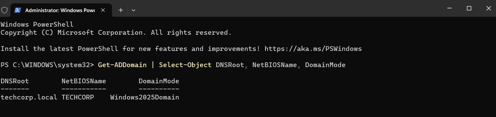
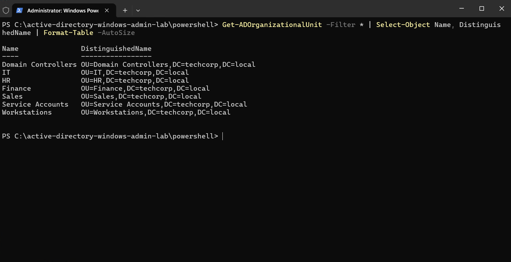
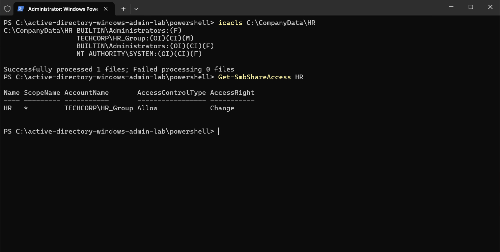
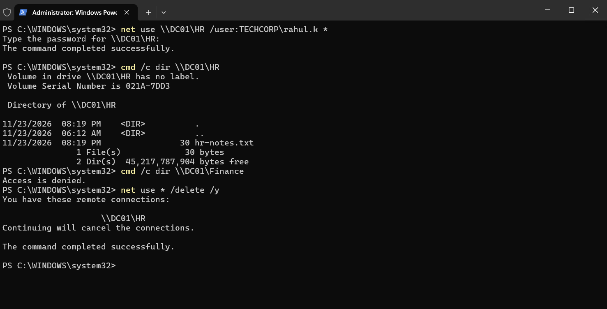
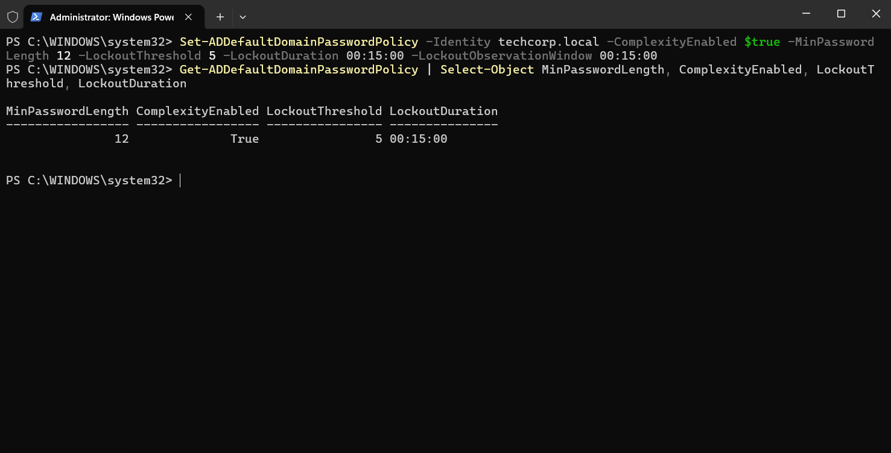
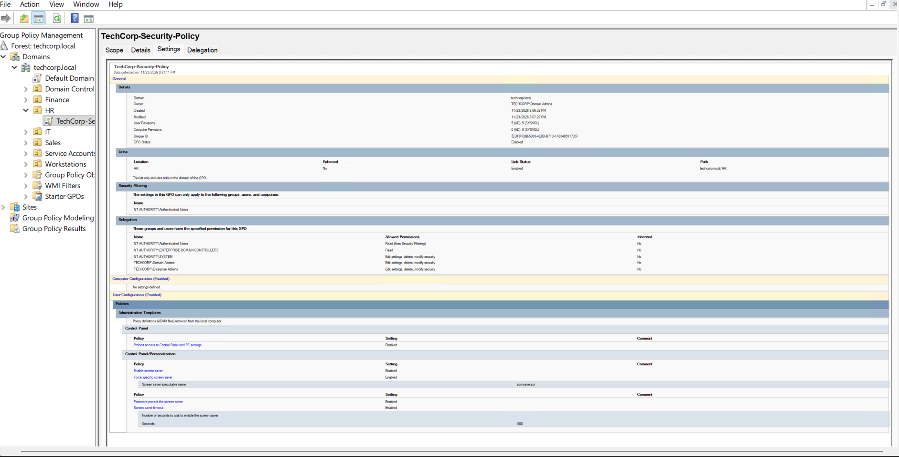
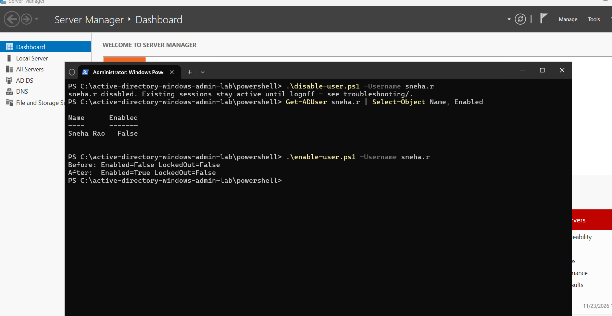
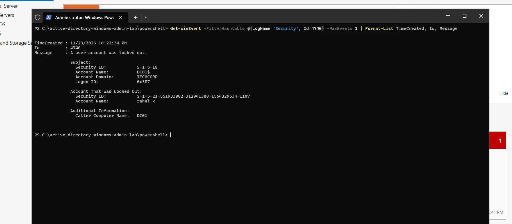
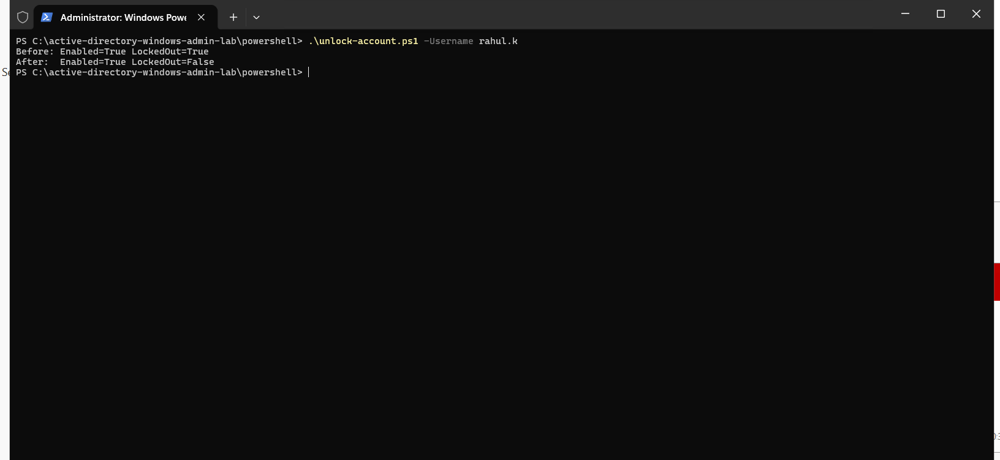

What was built
Everything below was run in my own VMware lab, and each item has a screenshot.
Domain
Windows Server 2025 promoted to a domain controller for techcorp.local with AD DS and DNS.
Directory
Six OUs, four users, and four security groups for HR, Finance, IT and the help desk.
Access control
HR, Finance and IT folders where only the matching group has access. Tested allowed and denied.
Group Policy
Password and lockout policy, plus a GPO for the HR OU with a secure screen lock and Control Panel restriction.
Automation
PowerShell scripts for users, groups, shares, password reset, unlock, disable and enable, with an action log.
Investigation
Account lockout traced through Security events 4625 and 4740, then unlocked and documented.
Directory and permissions
Domain, organizational units and the least-privilege folder test.

techcorp.local domain, created with AD DS.


Group Policy
Configured and linked. Client-side verification is not done yet.


Automation and investigation
PowerShell scripts and the account lockout case.


rahul.k locked out after failed attempts.
Tools
- Windows Server 2025
- Active Directory
- DNS
- Group Policy
- PowerShell
- NTFS / SMB permissions
- Event Viewer
- VMware
- Git
Scope
What is done, and what is not.
Built and tested
- Domain controller, OUs, users, groups
- Least-privilege shares, tested both ways
- PowerShell scripts
- Lockout investigation with event logs
Not done yet
- Windows client joined to the domain
- Group Policy verified on a client
- 8 of 10 planned troubleshooting scenarios
This is a local lab. The page shows screenshots from my own VMs, not a running service.